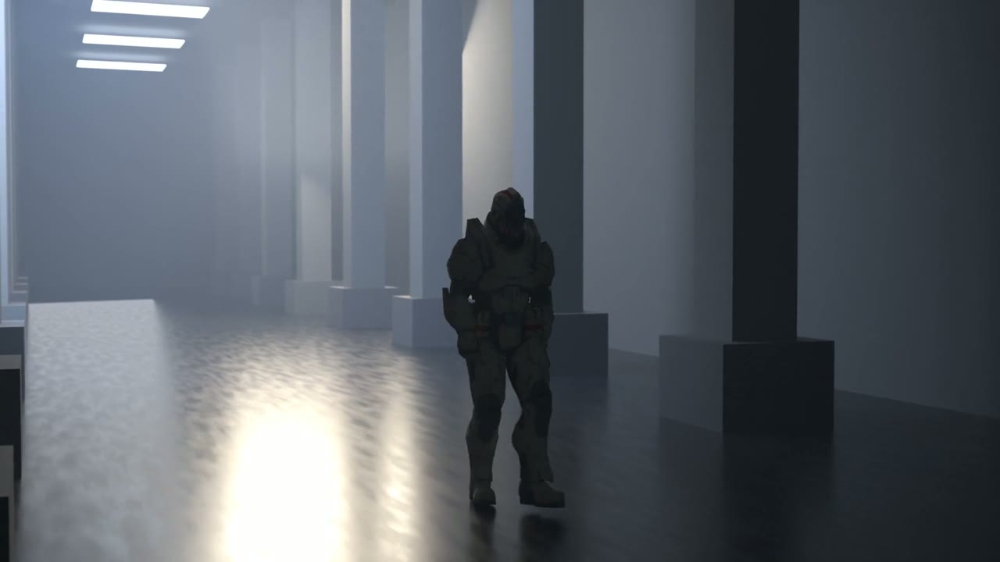

video production engine
Films that compile.
A video production engine that treats a film as source code — scenes are YAML programs, rendering is a build, and every shot ships with machine-checked proof that it is correct.
A video production engine that treats a film as source code — scenes are YAML programs, rendering is a build, and every shot ships with machine-checked proof that it is correct.
Framing, occlusion, timing, and motion — verified from the renderer's own ground truth. No human review loop. No vision-model guesswork.

Shots declare framing, staging, motion, and assertions in a closed, schema-checked vocabulary.
assert: visible(hero) >= 0.9The compiled scene renders through Greenlight's headless Blender bridge — the same pipeline behind every shot.
Identity, depth, and occlusion passes plus per-frame motion telemetry — checked deterministically, fail-closed.
Shots declare framing, staging, motion, and assertions in a closed, schema-checked vocabulary.
assert: visible(hero) >= 0.9The compiled scene renders through Greenlight's headless Blender bridge — the same pipeline behind every shot.
Identity, depth, and occlusion passes plus per-frame motion telemetry — checked deterministically, fail-closed. $ gl verify → green
A film is a git repo of text. Shots declare framing, staging, motion, and assertions in a closed, schema-checked vocabulary. The canonical artifact is the program — video is a build product.
Every render emits evidence: object-identity, depth, and occlusion passes plus per-frame motion telemetry. Assertions are checked against that evidence — deterministic math, fail-closed, no learned judges.
Failures return structured diagnostics with causes and repair hints. Any AI agent — bring your own — can iterate edit → verify until green, unattended. The engine contains no LLM, so it never goes stale.
Structured slots for engine output — poster frame, proof badge, and the verdict trail above, wired in the moment a render clears gl verify.
engine — compiler, renderer bridge (headless Blender), verifier, finisher: working end-to-end
tests — 380+ passing, evidence-integrity and motion gates included
now rendering — first agent-authored, engine-verified short films
access — free tier at launch; pro & studio tiers to follow